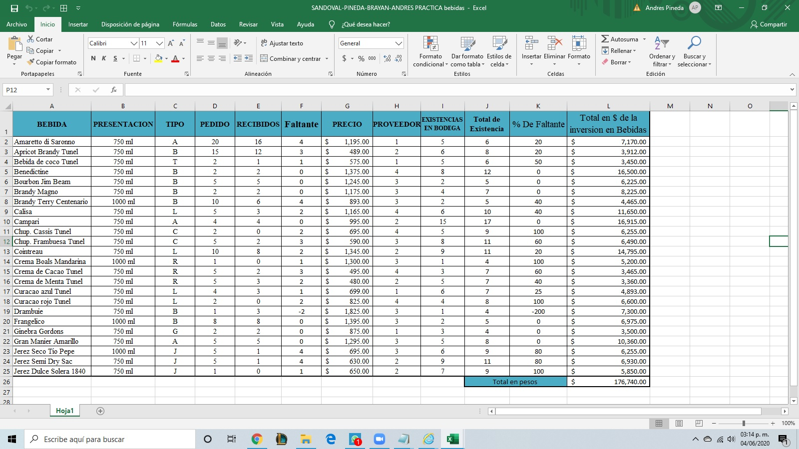

La verdad me la pase muy bien en esta materia, aprendi cosas muy utiles y divertidas, aunque claro, muchas veces las practicas eran un dolor de cabeza por el hecho de no poder hacerlas bien y tener que intentarlo una y otra vez.
Sinceramente el trabajar en excel es algo muy padre, pero la verdad fueron practicas que se me complicaron mucho, con las cuales entraba en desesperacion, pero a pesar de eso fue muy gratificante el poder realizarlas. Y pues como se puede ver las paginas web no fueron un gran reto para mi y se pueden ver mis practicas en el 2do menu.